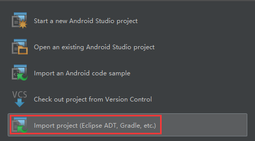
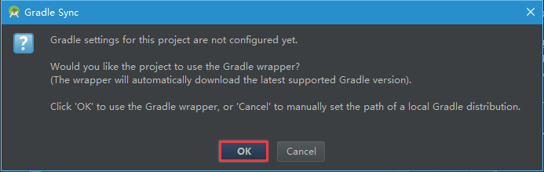
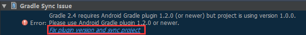

Cordova 打包¶
2016-01-13 22:19:18
在WebApp开发时，需要用到Cordova打包，然而一开始接触Cordova的时候，Cordova一会叫PhoneGap，一会又叫PhoneGap Build（情况较少），直接给懵了，不知到底在说哪个
三者之间关系¶
- Cordova：PhoneGap的代码贡献给了Apache软件基金会，但保留了PhoneGap的商标所有权，并命名为Apache Callback。1.4版发布后，接着Apache Callback的名称变更为Apache Cordova
- PhoneGap：原本由Nitobi公司开发，在2011年10月4日被Adobe收购
- Cordova：是一个在线打包工具，只需上传你的HTML5、CSS和JavaScript文件Adobe®PhoneGap™构建云服务,帮你做编译的工作
Info
总结：你可以这样理解，PhoneGap是原先的名字，Cordova是PhoneGap被捐给Apache之后用的项目名，PhoneGap的名字也被保留了。建议开发就直接使用Crodova
安装Crodova¶
Note
安装完Node.js，CMD中输入npm -v检查npm版本，如果不是最新版npm，通过npm install npm -g命令更新npm最新版本，其中-g代表：安装全局npm
创建Crodova项目¶
- 语法：
cordova create <PATH> [ID [NAME [CONFIG]]] [options] [PLATFORM...] - 示例：
cordova create hello com.example.hello HelloWorld，表示在默认路径（C:\Users\）下，创建hello目录并在该目录下创建一个包名 com.example.helloHelloWorld项目 语法参数说明PATH：Where to create the project，也就是项目工程路径ID：reverse-domain-style package name - used in，也就是项目包名 NAME：human readable field，也就是项目名称CONFIG：json string whose key/values will be included in [PATH]/.cordova/config.json Options（选项）:--copy-from |src=<PATH>... use custom www assets instead of the stock Cordova hello-world--link-to=<PATH>......... symlink to custom www assets without creating a copy
添加开发平台¶
- Add Platforms需要你的PC上已经安装好该Platforms的SDK，最好给SDK设置好环境变量
- 进入到项目中cd Name，示例：
cd hello - 给项目添加Platforms，语法：
cordova platform add <platform name>，示例：cordova platform add android
编译，安装，运行项目¶
- 编译项目：
cordova build android - 安装项目：
方法一：
- 准备：在你放置AndroidSDK的路径下，打开AVD Manager创建一个模拟器，可以参考：Google Android开发指南或者Cordova手册都有详细创建模拟器过程
- 输入命令：
cordova run android（如果你之前已经创建过模拟器，就能自己部署应用到模拟器上） 方法二：（适用已安装好Genymotion） - 启动Genymotion模拟器
- 定位到项目生成的apk文件，拖动到Genymotion内，自动安装 方法三：（推荐，适用已安装好Android Studio，不需要用cordova build android命令编译）
- 启动Android Studio
- 启动页面，选择Import project(Eclipse ADT,Gradle，etc.)方式打开
 - 定位到项目platforms下android文件夹，示例：D:\hello\platforms\android
- Android Studio会自动用Gradle编译
 - 编译完成，进入Android Studio工作界面，可能由于Gradle版本高，需要更新Gradle plugin，点击修复就好

Note
- 使用命令
cordova build android，第一次这个过程是需要链接网络，需要在线下载Gradle，下载是gradle-2.2.1 - 使用Android Studio编译，下载是Gradle库中最新版本，目前是gradle-2.4
- Gradle放置默认路径：
C:\Users\<YourPCName>\.gradle\wrapper\dists\gradle-2.2.1-all\2m8005s69iu8v0oiejfej094b和C:\Users\<YourPCName>\.gradle\wrapper\dists\gradle-2.4-all\6r4uqcc6ovnq6ac6s0txzcpc0 - 不能删除字符串文件夹，如果不能在执行编译过程中在线下载Gradle，那么请从其他渠道下载Gradle这两个版本，解压后文件夹分别为gradle-2.2.1和gradle-2.4放入到各自版本默认的字符串文件夹下面